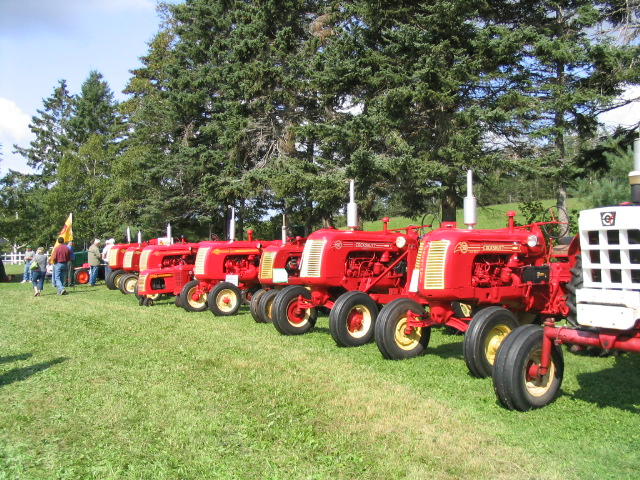

The Family Chronicle
No. 131 February 10, 2006
____________________________________________________________________

Case tractors at the show at
Argyle Shore, PEI
Folks along the Argyle shore in PEI put on an annual farm tractor show; I went this year for the first time. There were over 100 working farm tractors on display. The above shows a row of Cockshutt tractors but there were many other makes as well. None of the tractors were pre-WW2 vintage.
Transparent apples – Mmmm good
"Comfort me with apples…" (Song of Solomon)
An almost ripe transparent apple is the best thing I have ever eaten. Almost ripe transparents were a pale green; fully ripe in August they were almost white, but by then they had lost some of the tart crispness I so much enjoyed. I did my best to keep any transparent apple from ripening, but the bounty of that lone tree in the small MacNaughton orchard beside the house was truly amazing, and there were always a great many green apples that escaped me and grew to maturity. Once they had fallen from the tree they were of no interest to me--they were too white, too mushy.
There were other apple trees, but only the one transparent. It was an old tree when I first knew it, and over the years I saw it produce less and less, and then it was gone. I have never seen another one, although I have looked. If any reader knows of one, I beg you to contact me immediately, preferably by July. I will go wherever I must go to eat of the fruit of that tree. One bite and I will be in Eden, in the paradise as I remember it, of summer boyhood down home.
Donald Edge
Turnpiking a Road
The term “turnpike” is used to denote the making of a new road. In fact, I read that my Grandfather Glendenning had “turnpiked” the road from Canobie to a new settlement about a mile in behind Canobie called Springfield.
My search on the internet, however, speaks of “turnpiking” as collecting a toll. There were a number of references about a person being given permission by the local or state authorities to collect tolls. Certainly the Maine Turnpike was a toll road.
Can anyone enlighten me?
Wages and costs in 1915
A history of the “Fighting 26th”, the 26th New Brunswick Battalion, CEF, includes an item on a soldier’s daily pay including field allowances in 1915. A number of Black River boys served overseas in this Battalion.
Warrant Officer $2.50
Sergeant $1.50
Corporal $1.20
Private $1.10
Soldiers could assign up to 80% of their pay to relatives.
Costs at that time were:
Bread 5 cents a pound
Beef 13 cents a pound
Mutton 15 cents a pound
There was no income tax in those days.
Funeral customs
Funeral customs have changed and are changing. When I was young, people were waked and buried from their home; sometimes a service was held in the church just prior to the burial. Cremation was unheard of in the community
There were always two days for visitation whereas now one day is becoming the norm. .
In times of bereavement, neighbours brought food, cooked and did the dishes. Visits were more than a brief handshake in a receiving line. After the mourners left the house for the cemetery, a neighbour usually stayed behind to rearrange the room before the family returned. A deep purple ribbon or banner was place by the front door of the deceased’s home.
In the winter, bodies would be transported from the house to the cemetery by a sled and a wagon during the summer
Eulogies, if any, were brief; the funeral was an occasion for the minister to deliver a sermon. I remember my Aunt saying that a funeral provided an opportunity to reach many people who were not church-goers.
The actual burial took place whatever the time of the year. The dry, sandy soil of the Black River Cemetery meant that the ground was relatively easy to dig even in the midst of winter. Graves were dug by hand and usually by relatives and neighbours.
The Family Chronicle (Copyright) is an occasional newsletter published by Don Glendenning and posted on the family website. It is intended to share information about my family, community and the times in which I grew up. While every effort is made to be accurate, errors are likely to occur. Comments, enquiries and information may be sent to 62 Queen Elizabeth Drive, Charlottetown, PEI, C1A 3A9. Tel: 902 892 5859. Email: don@glendenning.net URL: www.glendenning.net/don